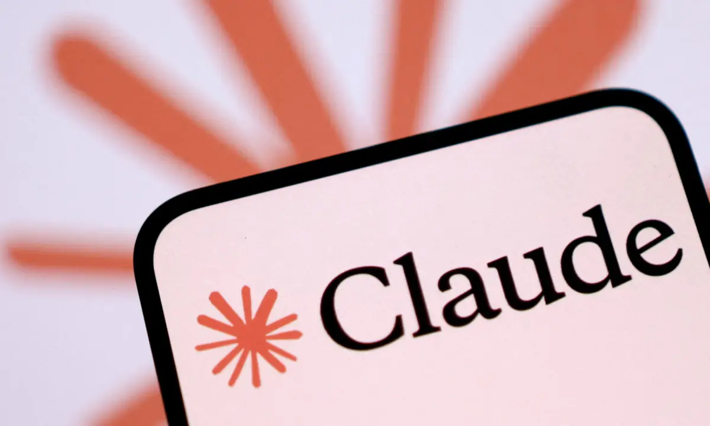
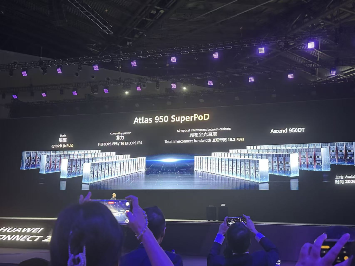
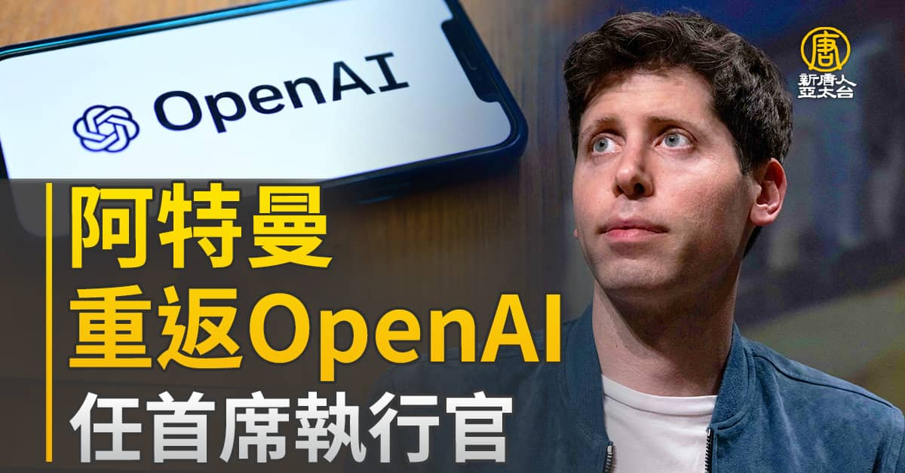
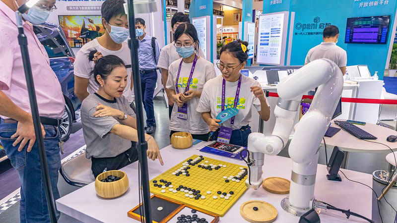
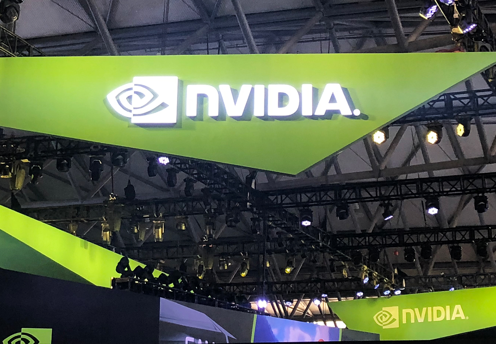
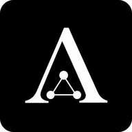
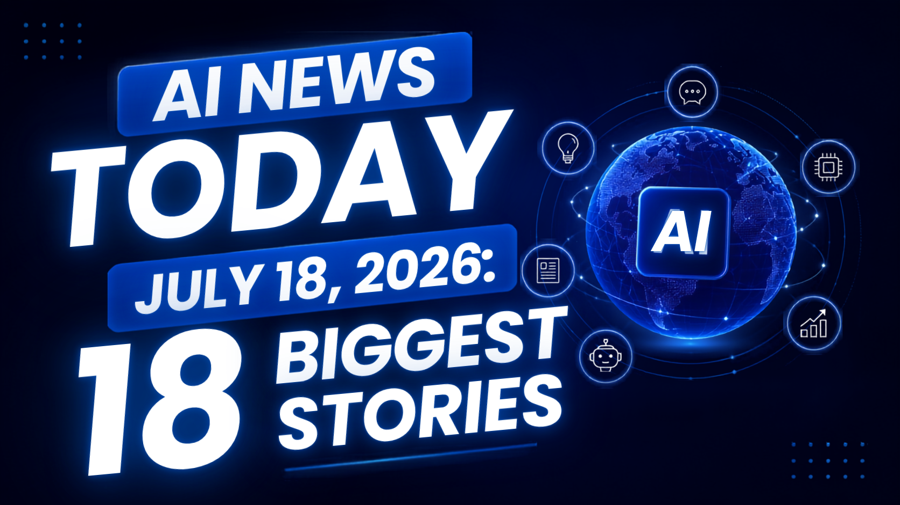
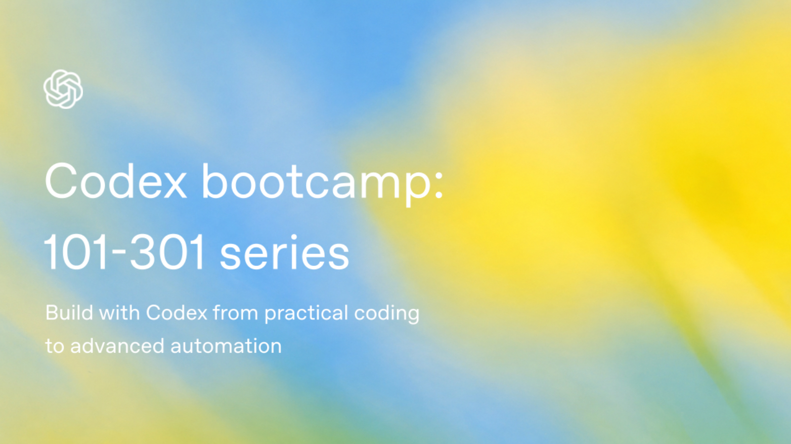

Janet 快车箱
AI Daily Briefing
2026-07-19
VOL 292
读者，早。
创作者和中小团队要看的不是谁喊得最大声，而是谁控制了你的成本、分发和风险。模型便宜了，项目才可能跑得起；算力被少数巨头握住，价格就不完全由模型决定；平台开始为 AI 滥用负责，工具增长也不能只赌擦边流量。

TechCrunch 7 月 18 日报道，Moonshot AI 本周发布 Kimi K3 后，引发美国科技圈对中国开放模型的激烈讨论。报道提到 Moonshot 称 Kimi K3 仍落后 Claude Fable 5 和 GPT-5.6 Sol 等最强闭源模型，但在其评测套件中持续超过其他受测模型；市场层面，Kimi 相关讨论也被拿来解释芯片股压力和开源监管争论。

Reuters 7 月 18 日经由 Economic Times 报道称，Meta 和 Anthropic 正在谈判一项潜在两年、最高约 100 亿美元的 AI compute lease deal。报道指出，这类交易可帮助 Meta 在广告之外把基础设施商业化，也让 Anthropic 在高级 AI 工具需求升温时补充计算容量。
Xinhua 报道，29 个国家在上海签署建立 World Artificial Intelligence Cooperation Organization 的协议。随后 7 月 17 日，习近平在 2026 World AI Conference 开幕式上呼吁更公平的全球 AI 治理，并把新合作组织作为中国推动多边 AI 规则的一部分。AP 也报道了中国借 WAIC 强调技术共享和发展中国家合作的姿态。

WIRED 报道，San Francisco City Attorney David Chiu 向 Apple 和 Google 发出 cease-and-desist letters，要求它们移除 13 款使用 AI 生成非自愿裸照的应用。这些应用多以 face-swap 工具包装，常被用来针对女性和未成年人；监管动作直接指向应用商店的分发和支付责任。

Dawn 7 月 18 日报道，Anthropic 将从 7 月 20 日起把 Claude Fable 5 加入 Max 和 Team Premium 计划，额度为使用限制的 50%。报道还回顾，Fable 5 和 Mythos 5 曾因美国政府针对外国公民的国家安全限制而暂停，之后 Fable 5 于 7 月 1 日重新开放。
Moonshot 对外称 Kimi K3 在评测中达到 frontier-level performance，并仍承认它落后 Claude Fable 5 和 GPT-5.6 Sol。TechCrunch 的报道把这次发布放进开放权重、美国监管风险和模型蒸馏争论里观察，说明 Kimi 的影响已经超出单个 benchmark。

Dawn 报道称，Claude Fable 5 将进入 Anthropic 的 Max 和 Team Premium plans，并按 50% usage limits 计算。Anthropic 当前计划体系包括 Free、Pro、Max 5x、Max 20x、Team Standard、Team Premium、自助 Enterprise 与销售协助 Enterprise。

BuildFastWithAI 7 月 18 日汇总称，市场原本预期 Google 在 7 月 17 日推出 Gemini 3.5 Pro，但该模型据称因 coding 和 complex reasoning 表现不足再次推迟；截至该文发布，Google 尚未给出官方 model card、价格页或 benchmark。该说法也被多份 AI 行业简报引用。

Reuters Connect 的 WAIC 图像资料显示，观众在上海 World Artificial Intelligence Conference 的华为展台拍摄 Atlas 950 SuperPoD system。相关报道把它描述为中国在不依赖 Nvidia 先进芯片条件下展示 AI computing cluster 能力的一部分。

OpenAI 在 7 月 17 日发布《A scorecard for the AI age》，建议企业不要只看 token 单价，而要衡量 useful work、cost per successful task、dependability 和 value at scale。文章强调，完整成本还包括员工时间、人审、重试和返工；企业应把总成本除以达标任务数量。
San Francisco 对 13 款 AI nudify apps 的下架要求，把监管压力从模型和 app 开发者推向 Apple 与 Google。WIRED 报道指出，这些工具被下载数百万次，并通过应用商店支付体系获利；City Attorney 要求平台切断与相关开发者的商业关系。

Xinhua 称 WAICO 将作为独立政府间国际组织，总部设在上海。People's Daily 后续报道列出部分创始成员包括 Kazakhstan、Laos、Pakistan、Russia 和 Indonesia，并称中国外长王毅代表中国政府签署协议。

Meta 与 Anthropic 的潜在算力租赁交易，被 Reuters 描述为 Meta 在广告之外寻找基础设施收入的一步。FT 也称相关讨论处于初步阶段，可能涉及两年内最高 100 亿美元的 data center capacity。

WSJ 报道称，Apple 在周五盘中一度超过 Nvidia，重新成为美国市值最高的上市公司；早盘 Apple 市值达到约 4.91 万亿美元，Nvidia 约 4.83 万亿美元，但收盘时 Nvidia 以约 4.908 万亿美元略高于 Apple 的约 4.902 万亿美元。

AI Industry Daily 7 月 18 日汇总称，TSMC 第二季度净利润同比增长 77% 并创下纪录，高性能计算收入中 AI chips 贡献 66%。该简报还提到 TSMC 上调全年营收增长展望，并继续推进 Arizona 扩建投入。

BuildFastWithAI 7 月 18 日汇总把 San Francisco 对 nudify apps 的行动，与 xAI 因 Grok 生成儿童剥削材料被起诉的新闻放在同一组安全事件里，指出 AI 图像生成的滥用已经成为平台、模型公司和应用商店共同面对的法律问题。

OpenAI Academy 7 月 18 日上线 Codex Bootcamp 资源页，介绍一个面向 builders 的三段式 live series：Codex bootcamp 101 讲 agentic coding，201 讲 team workflows，301 讲 advanced automation。课程覆盖任务范围、上下文、团队规则、工具连接、skills、automations、worktrees、Codex SDK 和 CI/code-review patterns。